Kappale 5 2023 (Vividus)
Tässä taas vain ne kysymykset, joita ei aikaisemmissa tenteissä.
5.1 Lonkkamurtuma + nivelrikko – laitetaanko kokotekonivel?
Solution.
KylläKokotekonivel on ensisijainen reisiluun kaulan murtuman hoito, jos murtumanpuoleinen lonkkanivel on reuman tai nivelrikon tuhoama. Useimmiten vanhusten collummurtumat hoidetaan puolitekonivelellä. Joskus myös osteosyteesi on mahdollinen (esim. hyväkuntoinen luu ja hyväasentoinen murtuma).
Trokanteeristen ja subtrokanteeristen murtumien hoidossa ei yleensä käytetä tekonivelleikkauksia, vaan turvaudutaan gammaneulaan (liukuruuvi joskus trokanteerisissa).5.2 Kyynärpään terrible triad, mitä vammoja kuuluu?
Oli jo aikaisemmin, mutta kerrataan nyt taas ilman apuja.
Solution.
Instabiili kyynärvamma
Kyynärnivelen luksaatio, johon liittyy capitulum radiin murtuma, ulnan processus coronoideuksen murtuma ja merkittävä nivelsidevaurio
Vamma on hyvin instabiili, ja hoito tulee keskittää kirurgisiin toimintayksiköihin. Nivelen voi varovaisesti yrittää reponoida ja immobilisoida kulmakipsilastaan potilassiirron ajaksi.
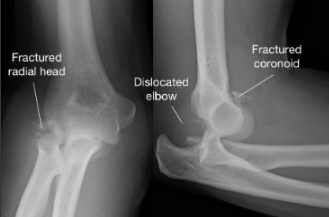
5.3 Distaalinen radiusmurtuma, kuka hyötyy eniten TT-kuvasta?
Valitse yksi
- 20-v varastotyöntekijä
- 60-v reumaatikko
- 80-v jolla osteoporoosi
- 10-v lapsi
Solution.
a5.4 Päivystät syrjäisessä tk:ssa illalla, RTG kiinni. Potilaalla murtunut ranne, selvä virheasento. Mitä teet?
Ei vaihtoehtoja wikissä, mutta todennäköisesti oikea vastaus on ollut:
- Reponoit ranteen, lastoitat sen, tarkistat verisuoni+hermostatuksen ja otat rtg-kuvan huomenna aamulla.
5.5 Mikä seuraavista ei ole hamstring-lihas?
Ei vaihtoehtoja wikissä, tässä mahdolliset.
- biceps femoris
- semitendinosus
- semimembranosus
- gracilis
Solution.
dHuomiona se, että biceps femoriksen lyhyttä päätä ei tyypillisesti lasketa hamstringeihin, koska se ei ekstensoi lonkkaa (ei ylitä sekä lonkkaa että polvea, vaan alkaa reisiluun diafyysistä; muut lähtevät istuinkyhmystä)
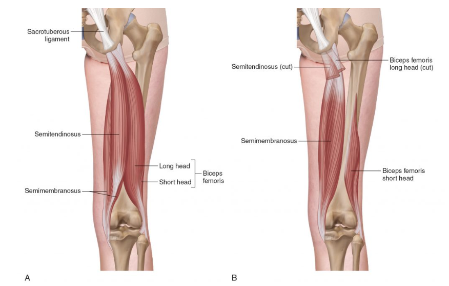5.6 Kuva rangasta, mikä seuraavista?
Ei esimerkkikuvaa tai vastausta wikissä, tässä yksi mahdollinen.
Valitse yksi:
- Burst-murtuma
- Chance-murtuma
- Lumbosakraalinen dissosiaatio
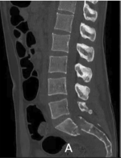
Solution.
cSpinopelvinen dissosiaatio = Lumbosakraalinen dissosiaatio
Liittyy pääasiassa sakrumin H- (tavallisin), Y- tai U-tyypin murtumiin eli molemminpuolisiin vertikaalisiin ristiluun murtumiin, joihin liittyy poikittainen murtumakomponentti. Tämä mahdollistaa selkärangan ja lantiorenkaan irtoamisen toisistaan.
H-tyypin sakrummurtumassa todetaan tyypillisesti molemmin puolin vertikaaliset murtumalinjat foramen-aukkojen linjassa (II-tyypin murtuma) ja näitä yhdistää poikittainen murtumakomponentti, joka yleensä sijaitsee S1-S2 -tasolla. Tämän seurauksena lanneranka ja sakrumin ylin osa irtoavat sakrumin irrallaan olevasta kaudaaliosasta ja molemmista lantiopuoliskoista.
Vammakokonaisuuteen voi liittyä myös lantiorenkaan etuosan murtuma tai acetabulummurtuma.
Lantiohermopunoksen (alaraajojen osittainen halvaus) ja ristiluuhermojen vammat (ns. cauda equina -syndrooma) ovat erityisesti H-tyypin murtumaan liittyen yleisiä.
Sakrumin dislokoitumista AP-suunnassa käytetään luokittelussa ja toipumisennusteen arvioimiseen

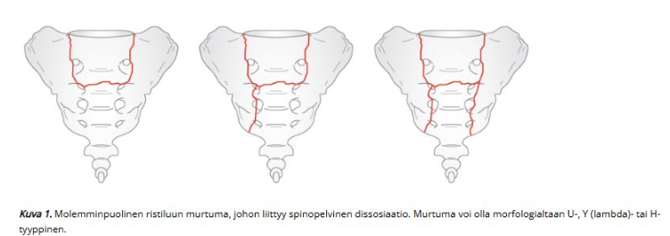
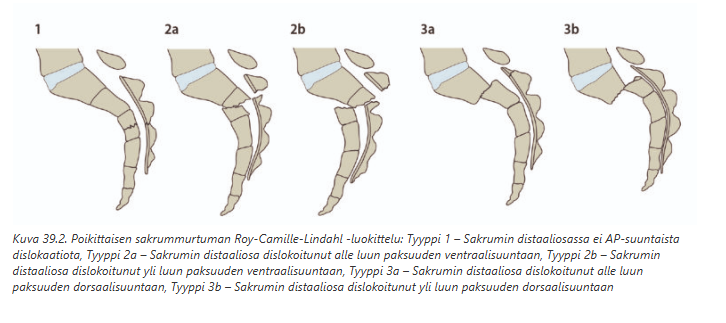5.7 Kolmioruston vaurio
Ei vaihtoehtoja tai kysymyksenasettelua wikissä, tässä aiheesta tärkeimmät:
Mikä kolmiorustokompleksi on?
- Kolmiorustokompleksi eli TFCC (Triangular Fibrocartilage Complex) on yksi DRUJ:n tärkeimmistä tukirakenteista (erityisesti kiertoliikkeessä). Se on nivelensisäinen rustokompleksio, joka koostuu useasta eri osasta: kolmiorusto (TFC, Triangular Fibrocartilage), palmaarinen ja dorsaalinen radioulnaariligamentti (PRUL ja DRUL), ulnokarpaaliset ligamentit (ulnokapitaattinen, ulnolunaarinen ja ulnotriquetraalinen ligamentti) ja ECU-jännetupin pohja.
- TFCC:llä on kolme tehtävää. Tärkein tehtävä on stabiloida DRUJ. PRUL ja DRUL huolehtivat tästä. Toinen tehtävä on toimia ranteen ja kyynärluun välisenä iskunvaimentimena. Tästä vastaa pääosin TFC. TFCC:n kolmas tehtävä on stabiloida rannetta ulnokarpaalisten ligamenttien välityksellä.
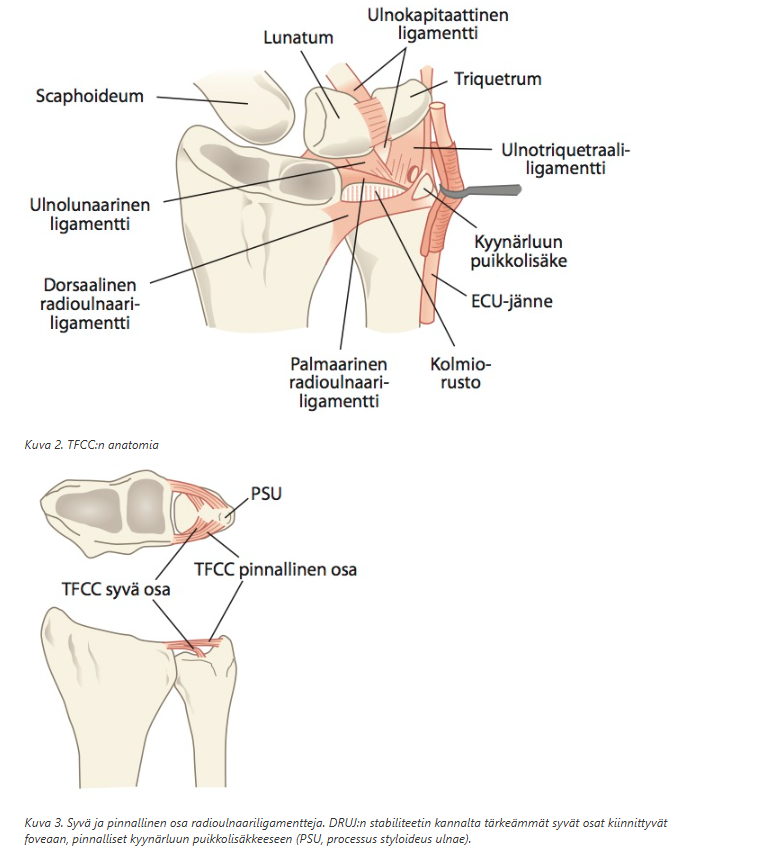
TFCC-vammautuminen
- TFCC voi vaurioitua vamman yhteydessä tai degeneratiivisesta syystä. Traumaattisen vaurion vammamekanismina on kaatuminen käden varaan tai ranteen vääntövamma (esim. porakoneen aiheuttama kiertovamma). Yleisin mekanismi on kaatuminen eteenpäin. Tällöin TFCC:n vamman aiheuttavat voimakas ranteen dorsifleksio ja kyynärvarren pronaatio.
- Distaalisiin radiusmurtumiin liittyy n. 50 %:ssa tapauksista TFCC-repeämä.
- Huom! TFCC-vaurio ei ole sama asia kuin DRUJ-instabiliteetti. Potilaalla saattaa olla kipeä, oireinen ranne nivelsiderepeämän vuoksi, vaikka DRUJ olisi kliinisesti stabiili.
Tutkiminen
TFCC:n kuormitustestillä ja fovean palpaatiolla arvioidaan synoviittia ja kipua, jotka viittaavat TFCC-vaurioon. Usein TFCC-vaurion yhteydessä on DRUJ:n instabiliteetttia ja tätä voidaan arvioida DRUJ-ballotement-testillä.
Perustutkimus kipeästä ranteesta on rtg. Tarvittaessa magneettikuvauksella pyritään selvittämään TFCC:n eri komponettien vauriot.

Hoito
- Vaihtelee vamman mukaan. Valtaosa hyvin suonitettujen alueiden vammoista ilman DRUJ-instabiliteettia hoituu konservatiivisella hoidolla (immobilisoimalla kyynärvarsi kulmakipsillä esim. 4-6vk). Huonosti suonitetut alueet taas usein operatiivisesti.
- Epätukeva DRUJ on tärkeä tunnistaa ja hoitaa se heti primaarivaiheessa.
- Degeneratiiviset vauriot (ulnar abutment/impaction syndrome) hoidetaan usein konservatiivisesti (provosoivien asentojen välttäminen, lastat yms). Kirurginen hoito, jos konservatiivinen hoito ei tehoa, DRUJ ei ole artroottinen ja havaitaan ulnar abutmentin kliiniset ja radiologiset löydökset.
5.8 Osteosarkooma ja hyödylliset laboratoriotutkimukset
Ei vaihtoehtoja, mutta tässä tärkeimmät aiheesta:
- Laboratoriokokeiden merkitys on luukasvainten diagnostiikassa yleensä varsin vaatimaton. Niiden käyttöä ei tule kuitenkaan unohtaa muun muassa luuston aineenvaihduntasairauksien ja tulehdusten poissulkemiseksi. Pääasiallinen diagnostiikka on kuvantaminen (rtg ensisijainen) ja epäilyn herättyä tehdään kiireellinen lähete luutuumorityöryhmään, jossa lisäkuvantamiset ja biopsiat.
- Mahdollisesti voidaan ottaa esim. osteoporoosilabrat (La, CRP, PVKT, Ca-Ion, Krea, 25-OH-D, keliakiaseula, mahdollisesti PTH, TSH, deksametasonikoe, seerumine elektroforeesi myelooman poissulkemiseksi) ja AFOS (koholla).
5.9 Milloin kipsi pitää vaihtaa?
Ei vaihtoehtoja, tässä tärkeimmät indikaatiot:
- Kipsi painaa / on kivulias 30 min kohoasennosta ja särkylääkkeestä huolimatta (mahdollinen ihorikko ja siten infektion riski)
- Kipsi on löystynyt (kipsit vaihdetaan usein 1-2vk kohdalla, kun turvotus on laskenut ja kipsi löystynyt)
- Kipsi on murtunut
- Varpaat/Sormet tunnottomat ja sinertävät (liian tiukalla)
- Kipsi haisee pahalle (hyvin relatiivinen indikaatio, mutta voi viitata infektioon; tyypillinen hien haju ei ehkä ole suoraan aihe vaihdolle) tai on märkä
- Nousee kuume (voi olla infektio kipsin alla)
- Leikkauksen jälkeen suunnitellusti ompeleiden poistoa varten
5.10 Mitä käden tenodeesi-ilmiö tarkoittaa?
Ei vaihtoehtoja ja kysymyksenasettelu hieman erilainen wikissä, mutta vastaa nyt ilman vinkkejä.
Solution.
Rannetta ojennetaan -> sormet fleksoituvat, rannetta fleksoidaan -> sormet ojentuvatHyödyllinen ilmiö tietää sormien jänteiden ehjyyden tutkimisessa, jos potilas on huonosti ko-operoiva tai kivun takia tutkiminen ei muuten onnistu
Kun koukistajajänne on ehjä, sormet koukistuvat passiivisesti rannetta ojennettaessa ns. tenodeesi-ilmiön ansiosta (samoin ojentajajänne ehjä jos sormet ojentuvat rannetta koukistaessa); esim. koukistajajännevamma on todennäköinen, mikäli potilas ei pysty koukistamaan tutkittavaa niveltä eikä tenodeesi-ilmiötä ole
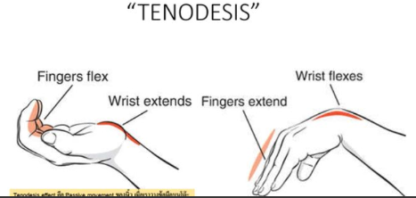5.11 Pikkurillin murtuma: teippaus vai kipsi?
Riippu hieman millainen murtuma, mutta wikissä ei ole kysymystä enempää.
- Jos ei-hyväasentoinen diafyysimurtuma, niin reposition jälkeen murtunut ja viereinen sormi immobilisoidaan käsi suoja-asennossa (safe-asento = sormien IP-nivelet ekstensiossa ja MP-nivelet 70 asteen fleksiossa) kyynärvarresta sormienkärkiin ulottuvalla volaarisella tai joskus jopa molemminpuolisella hyvin muotoillulla kipsilastalla tyvifalangissa 4 viikon ja keskifalangissa 4-6 viikon ajan. Kontrolli röntgen-kuvauksen perusteella tehdään päätös konservatiivisen ja operatiivisen hoidon välillä.
- Jos hyväasentoinen ja stabiili, niin voidaan teipata viereiseen sormeen
- Instabiilit dislokoituvat murtumat hoidetaan operatiivisesti
5.12 Gustilo-Anderson luokittelu
Ei kysymyksenasettelua wikissä, tässä luokittelu:
Gustilo-Andersonin luokittelu on siis avomurtumien pehmytkudosvamman vaikeusasteen arvioimisessa käytetty luokitus.
- Luokka 1 = Pienienergiainen vamma, alle 1 cm:n ihovaurio, joka on aiheutunut terävästä luun reunasta
- Luokka 2 = Yli 1 cm:n mutta alle 10cm ihohaava ja pehmytkudoksen ruhjevamma
- Luokka 3a = Suurienergiainen vammamekanismi, ihohaava yleensä > 10cm ja pehmytkudospuutos, mutta luu ei ole paljastunut laajasti eikä pehmytkudosvamma vaadi rekonstruktiokielekettä (adequate)
- Luokka 3b = Ihohaava yleensä >10cm ja laaja pehmytkudospuutos, joka vaatii kielekerekonstruktion; luukalvon irtoaminen, luukudos on paljastunut laajasti (bad)
- Luokka 3c = Ihohaava yleensä >10cm ja murtumaan liittyy rekonstruktion vaativa verisuonivamma (circulation)

5.13 Mitä tarkoittaa dislocatio ad latus?
Ei vaihtoehtoja, mutta tulisi osata vastata ilmankin.
Solution.
Sivusiirtymää murtumassa5.14 Kuva kyynärpäästä
Ei esimerkkikuvaa, tässä yksi mahdollinen
Valitse yksi
- olecranon murtunut
- ulna processus coronoideus murtunut
- radius murtunut

Solution.
aMurtumalinja kulkee olecranonin kapeimman alueen läpi. Täysin eksaktiasentoisten murtumien hoito voi olla konservatiivinen, erityisesti jos potilaan yleistila tai muut seikat tätä puoltavat. Konservatiivinen hoito toteutetaan 3 viikon mittaisella immobilisaatiolla kantositeessä tai kulmakipsilastassa ja murtuman asento tarkistetaan röntgenkuvin 1 ja 3 viikon kohdalla. Leikkaushoidon arvioon ohjataan dislokoituneet murtumat (> 2 mm). Operatiivisessa hoidossa murtuma asetetaan avoimesti paikalleen ja tuetaan teräspiikein ja teräslangalla (jännitesidos) tai levyllä. Leikkaushoidon tarve arvioidaan yksilöllisesti, sillä etenkin iäkkäillä konservatiivinen hoito tuottaa riittävän toiminnallisen tuloksen.
Tässä taas on esimerkit toisista murtumista. Huom! Isoloitunut proc. coronoideus -murtuma on hyvin harvinainen ja yleensä tapahtuu mm. terrible triadin yhteydessä.
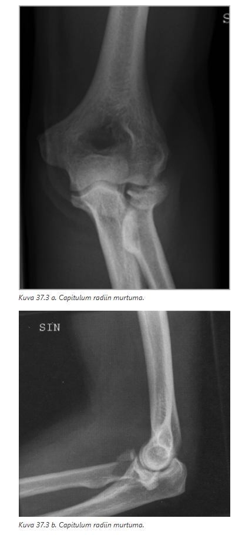
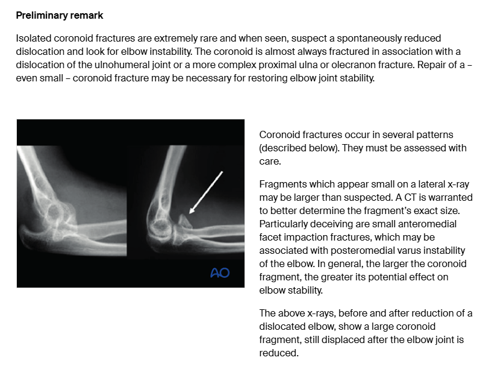5.15 Ramusmurtuman hoito
Ei vaihtoehtoja wikissä, tässä tärkeimmät asiat muistaa ramusmurtumien hoidosta:
- Ovat stabiileja lantiorenkaan murtumia tyypillisesti ja voidaan useimmiten hoitaa konservatiivisesti.
- Dislokoitumaton murtuma -> Potilaat mobilisoidaan kyynärsauvoilla ja sallitaan varaus kivun rajoissa.
- Lievästi dislokoituneet ramusmurtumat, joissa todetaan hieman lyhentymää ja vertikaalista dislokaatiota (< 10 mm), voidaan myös hoitaa konservatiivisesti keventämällä varausta vammapuolen alaraajaan 4-6 viikon ajan.
- Nuoremmilla potilailla suuremmalla vammaenergialla syntyneet voimakkaasti dislokoituneet ramusmurtumat on usein perusteltua hoitaa leikkauksellisesti. Levykiinnityksen jälkeen suosituksena on kevennetty varaus vammapuolen raajaan 6 viikon ajan.
5.16 Kuva sormen amputaatioarvesta. Arpi oudon näkönen, kellertävä ja halkeileva.
Ei esimerkkikuvaa wikissä, mutta nämä vaihtoehdot:
- bakteeritulehdus
- papilloomavirus
- kynsipiikki
- ihosyöpä
Kuvaa näkemättä arpi on todennäköisesti infektioitunut, jos aikainen leikkaushaava. Mahdollisesti myös voisi olla ihosyöpä ja mahdollisesti ns. Marjolinin haava (aggressiivinen ulseroiva levyepiteelikarsinooma, joka ilmenee aikaisemmin traumaa kokeneelle, krooniseesti inflammoituneelle tai arpeutuneelle iholle). Tämä kuitenkin ilmenee tyypillisesti vasta vuosien kuluttua (tosin on akuutti versio, joka ilmenee 12kk sisällä).
Kynsipiikki liittyy kynnen kasvuun, mutta amputoidussa sormessa ei yleensä ole kynsilevyä jäljellä.
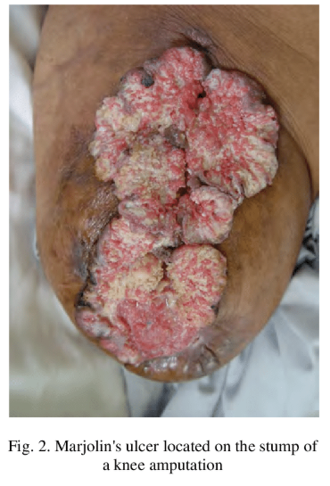
5.17 Lapsen torus-murtuma miten hoidetaan
Ei vaihtoehtoja, mutta tässä tärkeimmät tästä aiheesta:
- Torusmurtuma = Lapsen metafyysimurtuma; metafyysi voi aksiaalisen voiman vaikutuksesta murtua siten, että kompressionpuolen hohkaluu menee kasaan ja kuorikerros menee ryppyyn, kun taas distraktiopuolen kuorikerros jää joko ehjäksi tai siihen tulee lievä taipuma
- Tällainen murtuma (voi lapsen vanhemmille kuvailla jopa pelkkänä ryppynä, joten he eivät huolestu liikaa “murtumasta”) on stabiili, eikä sitä kannata/tarvitse yrittää reponoida eikä kipsiä välttämättä tarvita; myöskään kontrollikuvantamista ei lähtökohtaisesti tarvita
- Yleensä kuitenkin kipsataan vielä rutiinisti ja distaalisen radiuksen alueella (tyyppipaikka torusmurtumalle) hoito on dorsaalinen lastaus 3vk (kontrollointia ei tarvita ja vanhemmat voivat poistaa kipsin kotona)
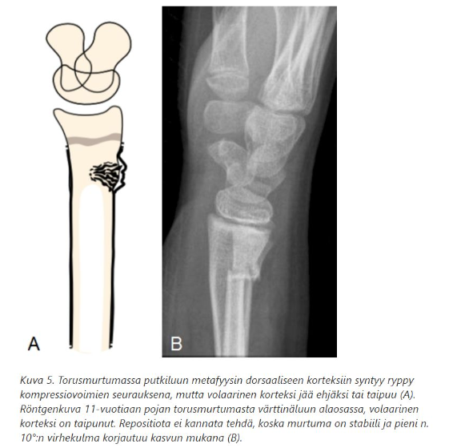
5.18 Triquetrum-murtuman hoito
Valitse yksi
- Operatiivinen
- Kipsi 6 vko
- Kipsi 3 vko
- Mobilisointi
Solution.
b
Kolmioluun (triquetrumin) murtuman hoito on useimmiten konservatiivinen. Hoitona käytetään 4–6 viikon immobilisaatiota dorsaalisella kipsilastalla.
Hoito tosin hieman riippuu murtuman tyypistä, mutta yleensä hoito on konservatiivinen. Immobilisaatioajasta on myös erimielisyyksiä (monien mielestä lyhytkin immobilisaatio voisi olla hyvä; esim. 2-4vk). Oppikirjan ja terveysportin mukaan kuitenkin hoito-ohje on 4-6vk.
Triquetrum on toiseksi yleisimmin (n. 14%) murtuva ranneluu (yleisin on veneluu, n. 80%)
Lateraaliröntgenissä voidaan usein nähdä yleisimmässä murtumatyypissä (dorsaalinen kortikaalinen) ns. pooping duck sign, jossa dorsaalisen korteksin avulsiomurtuma näkyy vain sivukuvassa dorsaalipuolella pienenä luupalana.
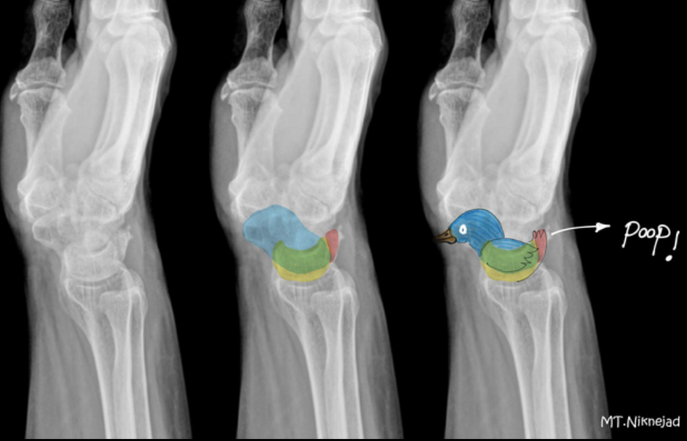5.19 Sormen proksimaalisessa osassa haava, miten hoidat tk:ssa
Valitse yksi
- Haavan sulku ja käsi koholle
- Staasimansetti ja haavan sulku
- Kiristysside ja haavan sulku
- Lähetän sairaalaan
Solution.
a
Jos käden haavaan ei liity distaalisten rakenteiden verenkierron vajaus, niin ei ole haavan sulkemisen jälkeen päivystyksellistä tarvetta hoidolle. Haavan sulku ja kohoasento (erittäin tehokas kivun ja turvotuksen hoidossa, ja se on helppo toteuttaa) usein riittävät. Jatkohoitoa ajatellen ihon haava ei yleensä estä nivelten liikuttamista, joka kannattaa aloittaa jo seuraavana päivänä. Haava (ja sitä peittävät sidokset!) on pidettävä puhtaina. Hyvin edistyvää haavan paranemista ei tule häiritä tiheillä siteenvaihdoilla
b: Sormen haavan toimenpiteet kannattaa tehdä verityhjiössä, mutta silloin käytetään verityhjiömansettia eikä samaa staasimansettia kuin esim. kanyloidessa.
c: Sama kuin b; ei käytetä kiristyssidettä tyypillisesti
d: Käden haavat, joihin liittyy distaalisten rakenteiden verenkierron vajaus, tulee lähettää kiireellisesti yksikköön, jossa verenkierto pystytään korjaamaan. Jos näin ei ole, niin ei yleensä ole päivystyksellistä tarvetta hoidolle.5.20 Kyynärvarren murtuma
Valitse yksi
- Hoidetaan konservatiivisesti kuten muut luut
- Mobilisoiminen aikasin konservatiivisen hoidon kannalta hyvä
- Operatiivinen
- Joku vielä (ei wikissä)
Solution.
c
Kyynärvarren murtumien hoito on yleensä operatiivinen. Aikuisten hyväasentoisissakin murtumissa harkitaan murtuman tukemista levykiinnityksellä, sillä putkiluun luutumisaika on pitkä (8‒12 viikkoa), eikä yläraajaa voi immobilisoida koko parantumisajaksi.
Yläraaja kannattaa lastoittaa tukevasti ja potilas lähettää kirurgiseen toimenpideyksikköön. Yläraajan voi kuormittamatta mobilisoida välittömästi tukevan kiinnityksen jälkeen.5.21 Frontaalikolari, mikä näistä ei ole tyypillinen vamma
Valitse yksi
- Suprakondylaarinen femur murtuma
- Patellamurtuma
- Posteriorinen lonkkaluksaatio
- Suoliluun avulsio
Solution.
d
a: Tyypillinen distaalisen femurin iskeytyessä kojelautaan
b: Suora polvilumpion isku kojelautaan
c: Yksi tyypillinen lonkkamaljakon vammamekanismi liittyy nokkakolariin, jossa koukistettuun polveen kohdistunut isku välittyy reiden akselin suunnassa koukistettuun lonkkaniveleen. Väkivalta kohdistuu acetabulumin takaosaan ja riippuen lonkan adduktio-abduktioasennosta, syntyy erityyppisiä murtumia. Lonkan ollessa tapaturmahetkellä adduktiossa syntyy tyypillisesti acetabulumin takareunan murtuma ja posteriorinen lonkkaluksaatio.
d: Ei tyypillinen kolarimurtuma. Spina iliaca anterior superior (ASIS) avulsio johtuu äkillisestä ja voimakkaasta sartorius- ja tensor fascia latae -lihasten kontraktiosta, jota tapahtuu äkillisessä lonkan ekstensiossa (esim. sprinttaus tai voimakas lyöntiliike pesäpallomailalla). Tämä on siis yleensä urheiluvamma nuorilla, ei dashboard-vamma.
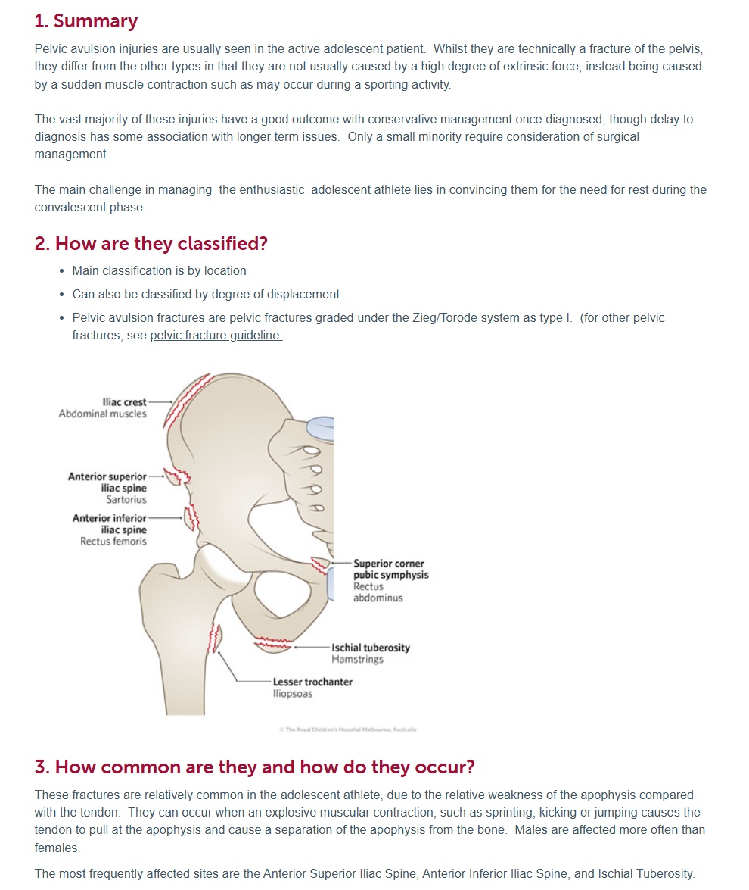
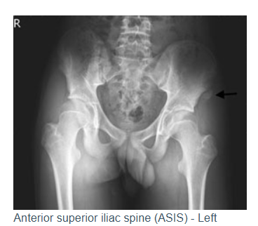5.22 Mikä ei pidä paikkaansa weber-murtumissa
Valitse yksi
- Weber A yleisin, 75% nilkkamurtumista
- Jotkut weber c voidaan hoitaa konservatiivisesti
- Jos weber b ja ei mediaalimalleolissa kipua eikä talus siirtynyt, voidaan hoitaa kons
- Joku vielä (ei wikissä)
Solution.
a
a: Weber B on yleisin (n. 70-80%). Weber A on harvinainen ja Weber C 15-20%
b: Weber C hoidetaan yleensä operatiivisesti, mutta jos nivelhaarukka on poikkeuksellisen stabiili, niin kons hoito on mahdollinen
c: Weber B voidaan hoitaa kons, jos nivel on kongruentti. Jos on epäily deltaligamenttivammasta (esim. mustelma mediaalisesti), niin voidaan ottaa vääntökuvat erikoissairaanhoidossa ja arvioida pysyykö nivelhaarukka kongruenttina väännössäkin. Jos pysyy, niin kons hoito on mahdollinen.
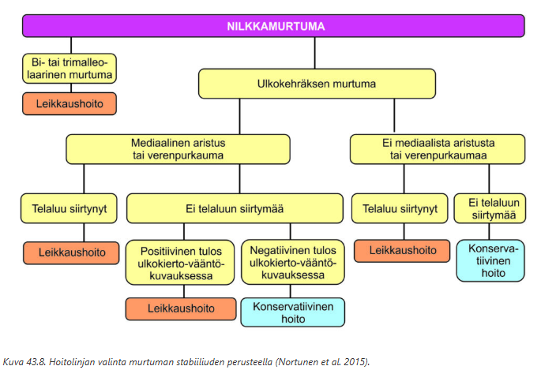5.23 Diabeetikon weber b (stabiili, ei talus liikkunu yms), miten hoidetaan?
Ei vaihtoehtoja wikissä, mutta sama kysymys ollut jo lähes samana aikaisemmin. Yritä vastata ilman vinkkejä.
Solution.
Konservatiivisesti
6vk immobilisaatio kipsisaappaalla. Varaus 3+2+1+. Kontrolliröntgenit 1vk+3vk. Trombiprofylaksia 3vk.
Jos Weber B-murtumassa nivelhaarukka on kongruentti ja potilas alle 65-vuotias ja ei merkittäviä riskitekijöitä ja hoitomyöntyvä → Avattava kipsisaapas 3 vkoa, varaus kivun mukaan (vrt. yllä kipsi 6vk ja varauskielto 3vk, osittainen varaus 2vk ja täysvaraus 1vk). Jos taas yli 65-vuotias tai diabetes, ASO yms. muu riskitekijä: ym. hoitolinja.5.24 Säärimurtuma, mikä on yleisin vammamekanismi?
Ei vaihtoehtoja wikissä, mutta tässä mahdollinen vastakkainasettelu. Kumpi on yleisempi vammamekanismi:
- epäsuora vammamekanismi, säären kiertovamma
- suora vammamekanismi, suora isku sääreen
Solution.
aSäärimurtumat voidaan jakaa trauman energiasisällön mukaan pieni- ja suurienergisiin, ja edelleen väkivallan luonteen mukaan epäsuoran ja suoran väkivallan aiheuttamiin.
Tavallisimmin säärimurtuma syntyy epäsuoralla vammamekanismilla säären kiertovääntövamman seurauksena. Tällöin sääriluun distaalikolmanneksen raja-alueella todetaan tyypillinen viisto ja kierteinen murtuma. Pohjeluu murtuu eri tasolta.
Suora väkivalta saa aikaan poikkimurtumia, joiden pirstaleisuus korreloi vammaenergiaan
Dislokoituneet säärimurtumat hoidetaan lähes poikkeuksetta leikkauksellisesti. Sääriluun varren alueen murtumien perushoitomenetelmä on salpaydinnaulaus, jonka avulla voidaan nopeimmin palauttaa potilaan toimintakyky. Yksinkertainen dislokoitumaton ja stabiili säärimurtuma voidaan mahdollisesti hoitaa kipsi-immobilisaatiolla (6vk pitkä kipsisaapas, jonka jälkeen lyhyt kipsisaapas).5.25 Milloin replantaatio
Valitse yksi
- 5-vuotiaan sormenpää irti
- 60-vuotiaan ranteesta distaalisesti käsi irti
- Non-dominantin käden peukalo jollai
- Kaikilla näillä replantaatio
Solution.
a
Replantaatiota harkitaan aina, jos:
Kyseessä on peukalo (tärkein yksittäinen sormi ja se tulisi aina saada toiminnalliseksi)
Kyseessä on useampi sormi (pyrittävä vähintään 2-3 sormen takaisinistutukseen, usein niin, että parhaiten säilynyt sormi asetetaan keskisormen asemaan, seuraavat 4. ja 2. sormien asemaan)
Kyseessä on lapsi (kasvun ja toiminnan kannalta tärkeää)
Amputaatio on kämmenluista, ranteesta tai proksimaalisemmin
Puhdas katkaisu, ei murskaava tai repeävä vamma5.26 Lannerangan murtuma
Valitse yksi
- Voi olla heikentynyt luu ja murtua pienellä vammaenergialla
- Yleensä ison vammaenergian murtumia
- jotain (ei wikissä)
- jotain (ei wikissä)
Solution.
a
5.27 ACL miten hoidetaan konservatiivisesti
Valitse yksi
- Ortoosi ja 6 vko varaamattomana
- Lihas- ja liikeharjotteet ja 2+2+2 varaukset
- Lihas- ja liikeharjotteet ja 3 vko kivun mukaan varaus
- Avattava kipsihylsy ja jotain (ei wikissä tarkemmin)
Solution.
b tai c (ehkä b parempi)
Polvea saa heti liikuttaa kivun sallimissa rajoissa. Kyynärsauvoja suositellaan käytettäväksi heti vamman jälkeen ja varausta keventämään, kunnes kävely sujuu ontumatta ja kuormittaminen on kivutonta. Sinällään jalalle saa siis heti alusta alkaen varata painoa vapaasti, mutta askelen laatuun ja vaiheisiin tulee keskittyä ja ontumista on vältettävä. Käytännössä siis sekä b ja c ovat oikein (jos potilas pystyy kävelemään normaalisti heti alussa, niin kivun mukaan varaus ok; tyypillisesti kuitenkin annetaan kepit pariksi viikoksi, jonka jälkeen hiljalleen lähdetään lisäämään rasitusta, kunnes kävely sujuu hyvin). Kaikille määrätään lihas- ja liikeharjoitteet.
a ja d: Immobilisaatiolle ei ACL-repeämän jälkeen lähtökohtaisesti ole tarvetta, vaan polvea saa ja pitää liikutella alusta pitäen sekä ojennus- että koukistussuuntaan.
Eturistisiteen kirurgisella hoidolla ei ole kiire, jos liitännäisvammoja ei ole todettu. Jos se todetaan tarpeelliseksi, niin se voidaan tehdä monenkin kuukauden päästä vammasta (esim. jos jää kons hoidon jälkeen toistuvia muljahduksia tai pettämistuntemuksia). Jos akuuttiin ACL-repeämään liittyy toinen polven nivelsiteen repeämä on hoito ensisijaisesti operatiivinen.